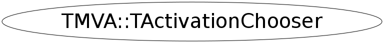

class TMVA::TActivationChooser
TActivationChooser Class for easily choosing activation functions
Function Members (Methods)
public:
| virtual | ~TActivationChooser() |
| static TClass* | Class() |
| TMVA::TActivation* | CreateActivation(TMVA::TActivationChooser::EActivationType type) const |
| TMVA::TActivation* | CreateActivation(const TString& type) const |
| vector<TString>* | GetAllActivationNames() const |
| virtual TClass* | IsA() const |
| TMVA::TActivationChooser& | operator=(const TMVA::TActivationChooser&) |
| virtual void | ShowMembers(TMemberInspector& insp) |
| virtual void | Streamer(TBuffer& b) |
| void | StreamerNVirtual(TBuffer& b) |
| TMVA::TActivationChooser | TActivationChooser() |
| TMVA::TActivationChooser | TActivationChooser(const TMVA::TActivationChooser&) |
Class Charts
{kind=link}
{kind=link}
{kind=link}
{kind=link}

Function documentation
CreateActivation(EActivationType type)
instantiate the correct activation object according to the type choosen (given as the enumeration type)
CreateActivation(const TString& type) const
instantiate the correct activation object according to the type choosen (given by a TString)